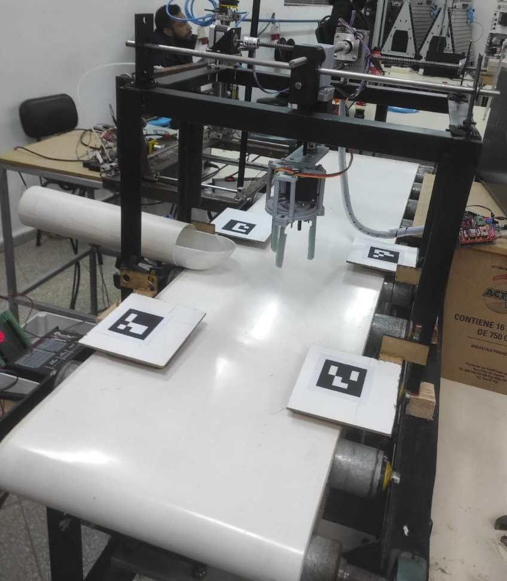
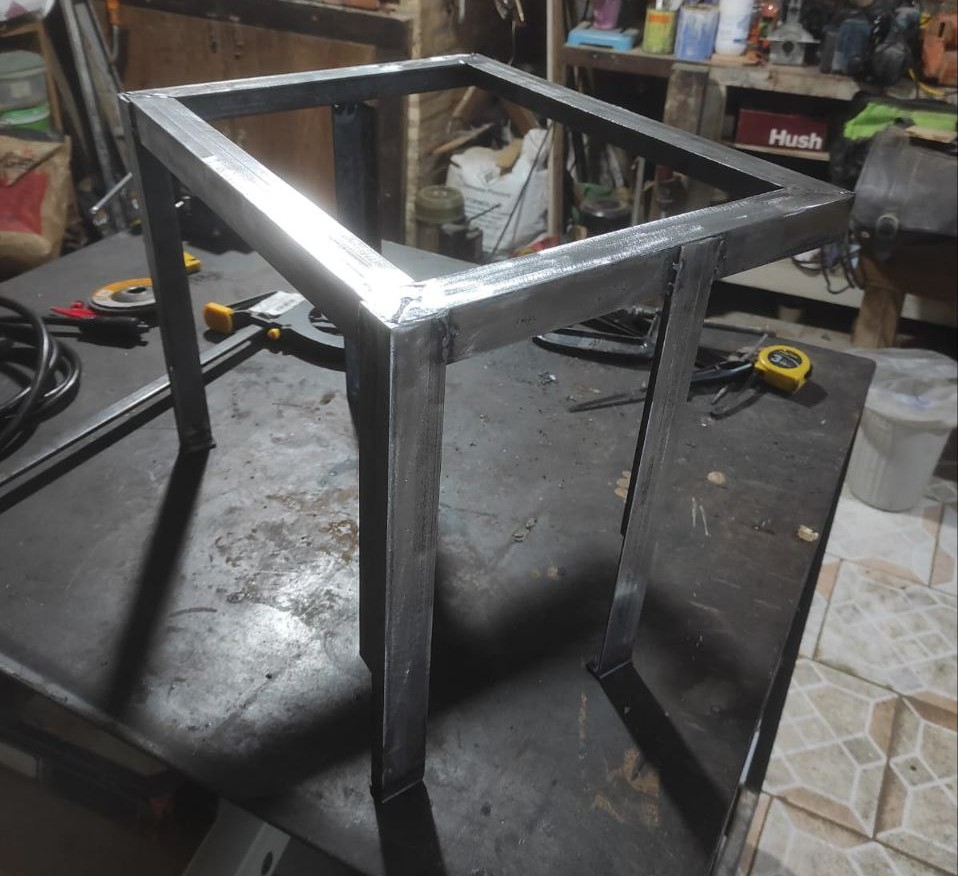
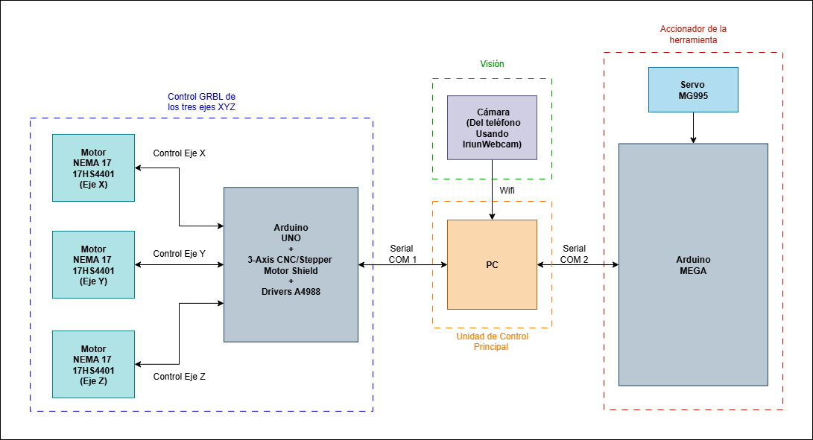
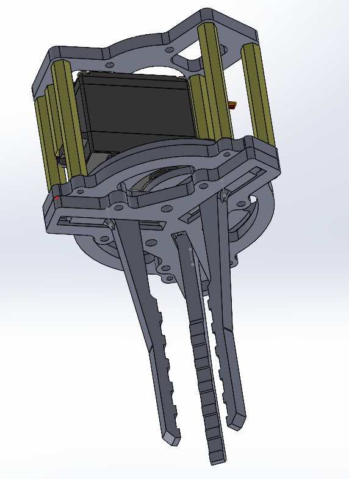
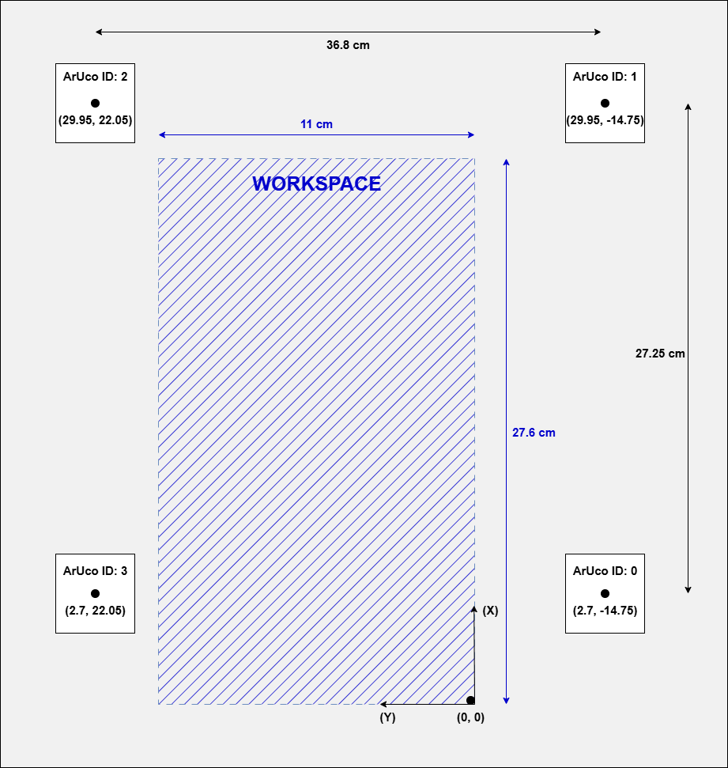
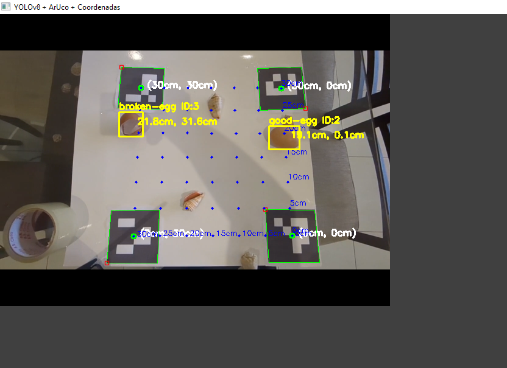
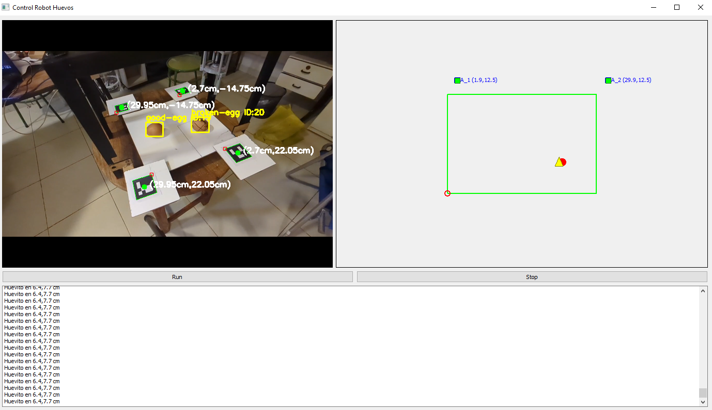
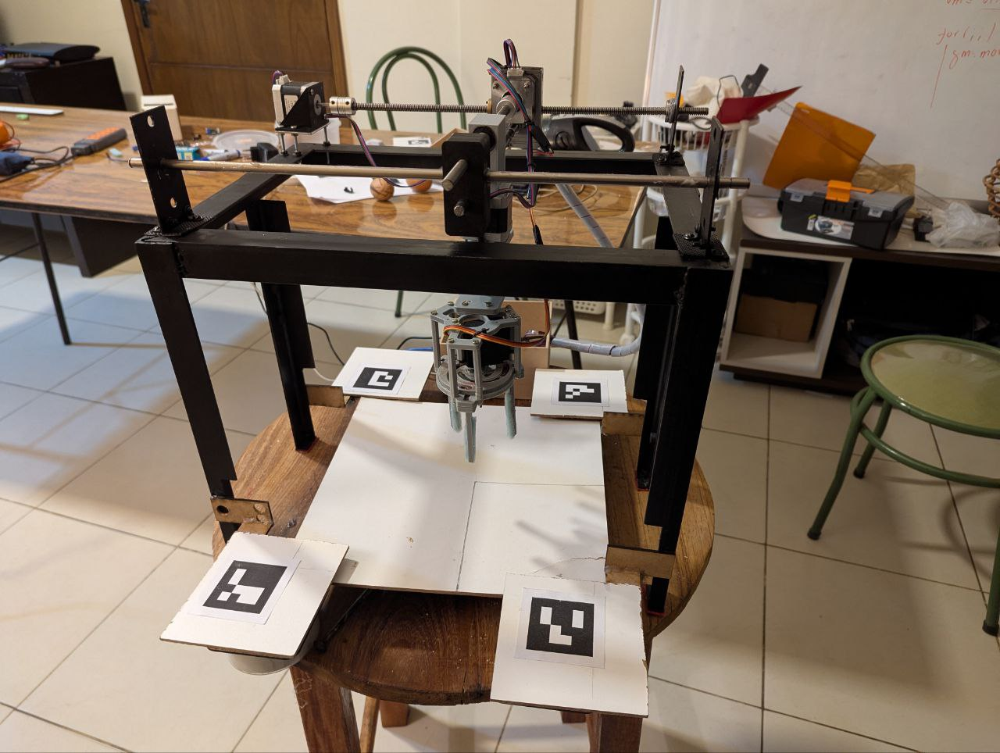
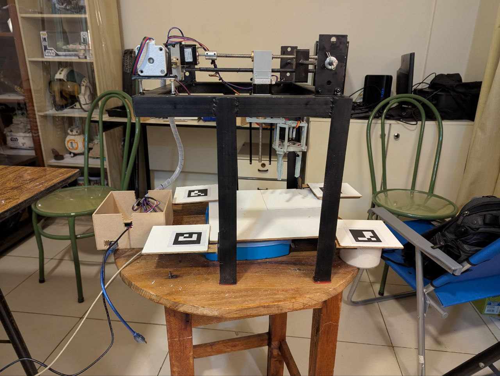

Egg Sorting Gantry Robot

Overview
R1 — Estación 1 is a custom-built 3-axis Cartesian (gantry) robot that autonomously detects, picks up, and sorts eggs on a conveyor belt. An overhead smartphone camera feeds live frames to a YOLOv8 model; an ArUco homography pipeline converts pixel coordinates to workspace centimetres with cm-level accuracy. A PyQt5 desktop GUI shows the live camera feed, a 2D workspace map, and a real-time terminal log. The gripper is driven by an Arduino Mega; motion is handled by GRBL on an Arduino UNO via G-code.
| Layer | Component | Role |
|---|---|---|
| Vision (PC) | Python · YOLOv8 · OpenCV · ArUco | Detects eggs via overhead camera; converts pixel coords to workspace XY via homography |
| GUI (PC) | PyQt5 · Python | Live camera feed, 2D workspace map (27.6 × 11 cm), and terminal log |
| Motion controller | Arduino UNO · GRBL 0.9j | Receives G-code commands; drives 3 × NEMA 17 steppers via A4988 drivers (7000 steps/mm) |
| Gripper controller | Arduino Mega · MG995 servo | Opens/closes 3D-printed servo gripper via serial commands ($on / $off) |
| Camera | Smartphone · overhead mount | Provides live frame stream to the PC vision pipeline over USB or Wi-Fi |
Autonomous pipeline — detect, localize, pick, sort
Detect — YOLOv8 finds each egg in the frame · Localize — ArUco homography maps bounding-box centre to workspace cm · Plan — PC computes pick target and sends G-code to GRBL · Pick — gripper closes, Z-axis lifts · Sort — robot moves to discard zone and releases
Welded Aluminum Frame
The robot structure is a custom-welded aluminum frame designed to be rigid, lightweight, and easy to mount on a standard conveyor belt line. The three Cartesian axes (X, Y, Z) are built with aluminum extrusion profiles and guided by linear rails, ensuring smooth and repeatable motion across the 27.6 × 11 cm workspace.
Each axis is driven by a NEMA 17 stepper motor through a belt-and-pulley transmission at 7000 steps/mm resolution — providing sub-millimetre positioning accuracy for reliable pick-and-place operations.
Hardware Architecture
The system uses a two-microcontroller architecture connected to a host PC:
- Arduino UNO + GRBL 0.9j — interprets G-code and drives 3× NEMA 17 steppers via A4988 drivers
- Arduino Mega — dedicated end-effector controller; receives serial commands from the PC
- A4988 drivers — microstepped current control for precise, smooth motion on each axis
- PC (Python) — runs all vision, planning, and GUI logic; sends G-code to GRBL over USB serial
- Smartphone camera — overhead-mounted; streams live frames to the PC vision pipeline

Welded aluminum Cartesian frame with linear rails

Hardware architecture — PC, Arduino UNO (GRBL), Arduino Mega, drivers
Mechanism
The end-effector is a parallel-jaw servo gripper mounted on the Z-axis head. It is actuated by a single MG995 servo that rotates between two angles to open and close the jaws:
- Close (grip) — servo at 20° → jaws clamp the egg
- Open (release) — servo at 90° → jaws spread apart
Commands are sent from the PC via the Arduino Mega over serial at 115200 baud:
$on
to grip,
$off
to release.
Material & Fabrication
All structural parts are FDM 3D-printed in PLA. The assembly consists of eight components: rotating base, upper and lower jaws, drive rods (28 mm and 50 mm), servo horn adapter, and gripper arm — all designed in CAD and sliced directly to print without supports.
The design is fully open-source; STL files and the editable CAD source are included in the project repository.

CAD model — parallel-jaw servo gripper (PLA, MG995)

Printed and assembled gripper on the robot Z-axis
Conveyor Belt Workspace
The robot operates over a 27.6 × 11 cm workspace that covers the full width of the conveyor belt. An overhead smartphone camera captures the entire workspace in a single frame, allowing the vision pipeline to detect every egg without moving the camera.
ArUco Homography
Four ArUco fiducial markers are placed at the four corners of the belt platform. At startup, the system detects these markers automatically and computes a homography matrix that maps any pixel coordinate in the image to its real-world position in centimetres on the workspace plane.
This one-time calibration step requires no manual measurement — the markers define the coordinate frame entirely. Once calibrated, the system converts every YOLOv8 bounding-box centre directly to a pick target in (X, Y) workspace coordinates, which are then sent as G-code to GRBL.

ArUco marker positions on the belt — define the homography coordinate frame
YOLOv8 Egg Detection
Each camera frame is processed in real time by a custom-trained YOLOv8 model that classifies every egg as good or broken. The model uses ByteTrack to maintain a persistent identity across frames, so the robot can continue tracking a target even if it is temporarily occluded. Detected bounding boxes are overlaid on the live feed together with the class label and track ID.
Homographic Projection
The centre of each detected bounding box is transformed into real-world workspace coordinates (in centimetres) using a homography matrix computed from the four ArUco markers. The same matrix is also used to produce a top-down perspective reconstruction of the belt, giving an undistorted, metric view of the workspace that is independent of camera angle or position.
Control GUI
A PyQt5 desktop application ties everything together. It shows the live annotated camera feed, a 2D map of the 27.6 × 11 cm workspace with the robot position, detected eggs, and ArUco marker status drawn in real time, plus a terminal log of every command sent to the robot. A Run / Stop button triggers the full autonomous cycle: homing, vision startup, and the pick-and-place loop.

Detection test — good/broken egg classification & coordinate assignment

Homographic reconstruction — top-down workspace projection

PyQt5 GUI — live camera feed, 2D workspace map & terminal log

Final build — frontal view

Final build — lateral view
 Full Demo
Full Demo
R1 Gantry Robot — Full Autonomous Sorting Demo
End-to-end autonomous run on the real robot: the vision system detects and classifies eggs on the moving conveyor belt, the homography maps their positions to workspace coordinates, and the gantry picks up and discards defective eggs — all without human intervention.
Watch on YouTube